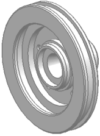

Open the part and set a PMI preference
-
Open pmi1_pmi_rotor and start the PMI application.

-
Choose Preferences→PMI→PMI.
-
Click the General tab.
-
Make sure the Display Dialog Box when Chosen from Shortcut Menu
 check box is selected and then click OK.
check box is selected and then click OK.